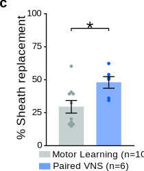
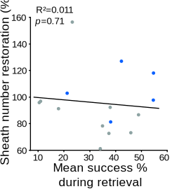
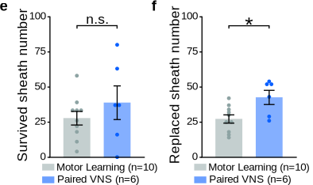

Figure 4 Paired VNS Restores Native Myelin Pattern#
Panels A & B: New OL Sheath Counts & Lengths#
Quantity vs. Quality. Before assessing where the myelin goes, we established whether Paired VNS alters the intrinsic properties of the new oligodendrocytes.

Experimental Insight: Targeting, Not Capacity
Similar to our findings with open-loop VNS (Fig. 2), pairing VNS with motor learning did not fundamentally alter the morphology of individual cells:
Similar to our findings with open-loop VNS (Fig. 2), pairing VNS with motor learning did not fundamentally alter the morphology of individual cells:
- Sheath Capacity (Fig. 4a): New oligodendrocytes generated the same number of sheaths regardless of the intervention (p = 0.1758).
- Sheath Length (Fig. 4b): The average length of these sheaths was statistically equivalent between groups (p = 0.0793).
Panel C: Sheath Replacement#

Show code cell source
import pandas as pd
from IPython.display import display, HTML
# Formatting function
def pretty_print_stats(df, title):
print(f"\n{title}")
display(HTML(df.to_html(index=False, classes='table table-striped table-hover', justify='left')))
# --- PANEL C DATA (Targeting Accuracy) ---
data_c = {
"Comparison": ["Paired VNS vs. Motor Learning"],
"Metric": ["% Sheath Replacement (Targeting Accuracy)"],
"Paired VNS Mean ± SEM": ["47.46 ± 4.41 %"],
"Motor Learning Mean ± SEM": ["29.02 ± 4.80 %"],
"Test": ["Two-tailed t-test"],
"P-Value": ["0.0213 (*)"],
"Variance Equality (Brown-Forsythe)": ["p=0.2381 (Equal)"]
}
df_c = pd.DataFrame(data_c)
# Display
pretty_print_stats(df_c, "--- Panel C Statistics: The \"Targeting\" Shift ---")
--- Panel C Statistics: The "Targeting" Shift ---
| Comparison | Metric | Paired VNS Mean ± SEM | Motor Learning Mean ± SEM | Test | P-Value | Variance Equality (Brown-Forsythe) |
|---|---|---|---|---|---|---|
| Paired VNS vs. Motor Learning | % Sheath Replacement (Targeting Accuracy) | 47.46 ± 4.41 % | 29.02 ± 4.80 % | Two-tailed t-test | 0.0213 (*) | p=0.2381 (Equal) |
Statistical Insight: Activity-Dependent Targeting
This result marks the critical divergence between open-loop (Fig. 2) and closed-loop stimulation:
This result marks the critical divergence between open-loop (Fig. 2) and closed-loop stimulation:
- The Failure of Open-Loop: Recall that open-loop VNS did not improve the targeting of new sheaths (Fig. 2e, p=0.1481).
- The Success of Pairing: By synchronizing VNS with successful motor reaches, we observed a significant increase in Sheath Replacement (p=0.0213). Nearly 50% of all new sheaths in the Paired VNS group were directed to repair previously myelinated axons, compared to only ~29% in the Motor Learning controls.
- Mechanism: This suggests that timing VNS to circuit activation provides the necessary "spatial tag" to guide new myelin to the specific axons that require metabolic support for the task.
Panel D: Visualizing Precision Repair#
Tracking the Fate of Individual Axons. To confirm that the increase in “Sheath Replacement” represents true circuit restoration, we utilized the same longitudinal tracking method established in Figure 2 (Panels F-H).

Visualizing the Repair Map (Fig. 4d)
The representative images highlight two distinct fates for the original myelin sheaths:
The representative images highlight two distinct fates for the original myelin sheaths:
- Survived (Cyan): Sheaths that persisted throughout the entire injury and recovery timeline. These represent the stable structural backbone of the circuit.
- Replaced (Yellow): The critical metric of repair. These are locations where the original sheath was lost (at the peak of injury) but was subsequently recaptured by a new oligodendrocyte during the recovery phase.
Panels E & F: Specificity of Repair#

Show code cell source
import pandas as pd
from IPython.display import display, HTML
# Formatting function
def pretty_print_stats(df, title):
print(f"\n{title}")
# Highlight significant p-values
def highlight_sig(val):
if isinstance(val, str) and ('*' in val or '<' in val) and not ('n.s.' in val):
return 'background-color: #d4edda; font-weight: bold;'
return ''
styled_df = df.style.applymap(highlight_sig, subset=['P-Value']).set_table_styles(
[{'selector': 'th', 'props': [('text-align', 'left')]}]
).hide(axis='index')
display(HTML(styled_df.to_html(classes='table table-striped table-hover', index=False)))
# --- PANELS E & F DATA (Survival vs Replacement) ---
data_ef = {
"Metric": [
"Survived Sheath Count (Fig. 4E)",
"Replaced Sheath Count (Fig. 4E)",
"% Myelin Replacement (Relative Yield) (Fig. 4F)"
],
"Paired VNS Mean ± SEM": [
"33.19 ± 5.31",
"48.79 ± 2.93",
"35.19 ± 1.81 %"
],
"Motor Learning Mean ± SEM": [
"27.57 ± 3.35",
"29.81 ± 1.92",
"23.79 ± 1.07 %"
],
"Statistical Test": [
"REML Mixed Model (F-Test)",
"REML Mixed Model (F-Test)",
"REML Mixed Model (F-Test)"
],
"P-Value": [
"0.5938 (n.s.)",
"0.0022 (**)",
"0.0098 (**)"
],
"Interpretation": [
"VALIDATION: Identical baseline injury",
"EFFECT: VNS restores lost sheaths",
"EFFECT: VNS improves repair efficiency"
]
}
df_ef = pd.DataFrame(data_ef)
# Display
pretty_print_stats(df_ef, "--- Panels E & F Statistics: Specificity of Repair ---")
--- Panels E & F Statistics: Specificity of Repair ---
/tmp/ipykernel_128902/2950413148.py:13: FutureWarning: Styler.applymap has been deprecated. Use Styler.map instead.
styled_df = df.style.applymap(highlight_sig, subset=['P-Value']).set_table_styles(
| Metric | Paired VNS Mean ± SEM | Motor Learning Mean ± SEM | Statistical Test | P-Value | Interpretation |
|---|---|---|---|---|---|
| Survived Sheath Count (Fig. 4E) | 33.19 ± 5.31 | 27.57 ± 3.35 | REML Mixed Model (F-Test) | 0.5938 (n.s.) | VALIDATION: Identical baseline injury |
| Replaced Sheath Count (Fig. 4E) | 48.79 ± 2.93 | 29.81 ± 1.92 | REML Mixed Model (F-Test) | 0.0022 (**) | EFFECT: VNS restores lost sheaths |
| % Myelin Replacement (Relative Yield) (Fig. 4F) | 35.19 ± 1.81 % | 23.79 ± 1.07 % | REML Mixed Model (F-Test) | 0.0098 (**) | EFFECT: VNS improves repair efficiency |
Statistical Insight: Identical Baseline, Divergent Recovery
The decomposition of sheath fate validates our experimental timeline and highlights the specificity of the repair:
The decomposition of sheath fate validates our experimental timeline and highlights the specificity of the repair:
- Validating the Baseline (Survival): Since the intervention began after the demyelination period, we expected no difference in sheath survival. The statistical equivalence (p = 0.5938) confirms that both groups entered the recovery phase with identical structural deficits, ruling out sampling bias or unequal injury.
- Targeted Restoration (Replacement): With the baseline confirmed, the divergence in replacement (p = 0.0022) indicates that Paired VNS actively recruits new oligodendrocytes to fill these pre-existing gaps.
- The Efficiency Shift (Panel F): Crucially, Paired VNS significantly increased the efficiency of this repair (p = 0.0098), reversing the trend seen in open-loop stimulation (Fig. 2j) where replacement efficiency actually trended downward.
Panels G & H: Paired VNS Restores Native Myelin Pattern!#

Show code cell source
import pandas as pd
from IPython.display import display, HTML
# Formatting function
def pretty_print_stats(df, title):
print(f"\n{title}")
# Highlight significant p-values
def highlight_sig(val):
if isinstance(val, str) and ('*' in val or '<' in val):
return 'background-color: #d4edda; font-weight: bold;'
return ''
styled_df = df.style.applymap(highlight_sig, subset=['P-Value']).set_table_styles(
[{'selector': 'th', 'props': [('text-align', 'left')]}]
).hide(axis='index')
display(HTML(styled_df.to_html(classes='table table-striped table-hover', index=False)))
# --- PANELS G & H DATA (Replacement Efficiency vs. Pattern Restoration) ---
data_gh = {
"Comparison": ["Paired VNS vs. Motor Learning", "Paired VNS vs. Motor Learning"],
"Metric": [
"Panel G: % Myelin Sheath Replacement (Efficiency)",
"Panel H: % Pattern Restoration (Final Topology)"
],
"Paired VNS Mean ± SEM": [
"32.91 ± 3.07 %",
"47.64 ± 3.54 %"
],
"Motor Learning Mean ± SEM": [
"22.97 ± 2.20 %",
"37.55 ± 1.84 %"
],
"Test": ["Student's t-test", "Student's t-test"],
"P-Value": ["0.0179 (*)", "0.0142 (*)"],
"Conclusion": [
"Significantly higher efficiency in replacing lost sheaths",
"Significantly higher fidelity to the original circuit map"
]
}
df_gh = pd.DataFrame(data_gh)
# Display
pretty_print_stats(df_gh, "--- Panels G & H Statistics: The Mechanism and The Outcome ---")
--- Panels G & H Statistics: The Mechanism and The Outcome ---
/tmp/ipykernel_128902/349993120.py:13: FutureWarning: Styler.applymap has been deprecated. Use Styler.map instead.
styled_df = df.style.applymap(highlight_sig, subset=['P-Value']).set_table_styles(
| Comparison | Metric | Paired VNS Mean ± SEM | Motor Learning Mean ± SEM | Test | P-Value | Conclusion |
|---|---|---|---|---|---|---|
| Paired VNS vs. Motor Learning | Panel G: % Myelin Sheath Replacement (Efficiency) | 32.91 ± 3.07 % | 22.97 ± 2.20 % | Student's t-test | 0.0179 (*) | Significantly higher efficiency in replacing lost sheaths |
| Paired VNS vs. Motor Learning | Panel H: % Pattern Restoration (Final Topology) | 47.64 ± 3.54 % | 37.55 ± 1.84 % | Student's t-test | 0.0142 (*) | Significantly higher fidelity to the original circuit map |
The Grand Conclusion: True Circuit Restoration
These two panels provide the definitive evidence that Paired VNS drives targeted repair rather than random regeneration:
These two panels provide the definitive evidence that Paired VNS drives targeted repair rather than random regeneration:
- The Process (Fig. 4g): Paired VNS significantly increased the efficiency of replacement (32.9% vs 23.0%, p=0.0179). This confirms that when the brain builds new myelin under closed-loop stimulation, it preferentially targets the axons that lost myelin.
- The Outcome (Fig. 4h): Crucially, this efficient replacement culminated in a restored circuit topology. The Pattern Restoration metric—which measures how closely the final myelin map resembles the pre-injury baseline—was significantly higher in the Paired VNS group (47.6% vs 37.6%, p=0.0142).
- Synthesis: While Motor Learning alone leaves the circuit permanently altered, adding VNS restores the native myelin pattern, effectively "healing" the map.